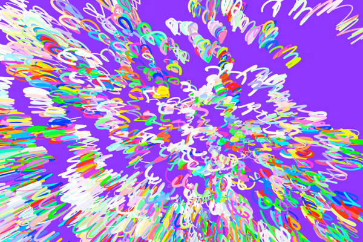

BRINNA THOMSEN
QUARTZ COMPOSER EXPERIMENTS
Quartz Composer is an API that allows users to mock up live interactions using a visual programming language. It can be used to manipulate live video, visualize sound and create complicated 3D graphics. Class: Computational Form
